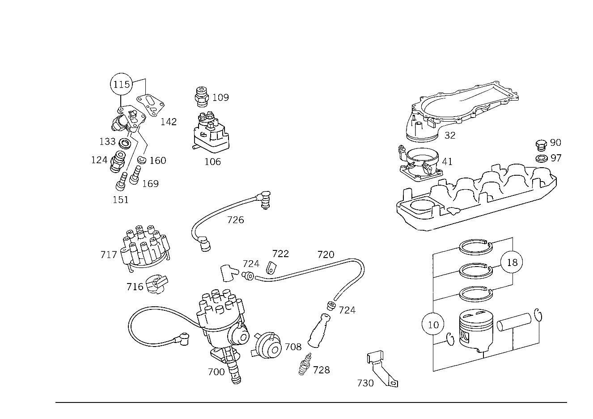

| № | Артикул | Название | Кол. | Примечание | Ограничение |
|---|---|---|---|---|---|
| 10 | A 117 030 34 17 | ПОРШЕНЬ | 8 | НОРМАЛЬНО 92.00 MM Z 12.375/05, Z 12.375/06, Z 12.375/07, Z 12.375/08 | |
| 10 | A 117 030 35 17 | ПОРШЕНЬ | 8 | РЕМОНТНАЯ ГРУППА I 92.50 MM Z 12.375/05, Z 12.375/06, Z 12.375/07, Z 12.375/08 | |
| 10 | A 117 030 36 17 | ПОРШЕНЬ | 8 | РЕМОНТНАЯ ГРУППА II 93.00 MM Z 12.375/05, Z 12.375/06, Z 12.375/07, Z 12.375/08 | |
| 18 | A 003 586 94 03 | - РЕМКОМПЛЕКТ | - | Z 12.375/05, Z 12.375/06, Z 12.375/07, Z 12.375/08 | |
| 18 | A 001 030 07 24 | - КОЛЬЦО ПОРШНЕВОЕ | 8 | НОРМАЛЬНО Z 12.375/05, Z 12.375/06, Z 12.375/07, Z 12.375/08 | |
| 18 | A 003 586 95 03 | - РЕМКОМПЛЕКТ | - | Z 12.375/05, Z 12.375/06, Z 12.375/07, Z 12.375/08 | |
| 18 | A 001 030 08 24 | - КОЛЬЦО ПОРШНЕВОЕ | 8 | РЕМОНТНАЯ ГРУППА I Z 12.375/05, Z 12.375/06, Z 12.375/07, Z 12.375/08 [402] БОЛЬШЕ НЕ ПОСТАВЛЯЕТСЯ | |
| 18 | A 003 586 96 03 | - РЕМКОМПЛЕКТ | - | Z 12.375/05, Z 12.375/06, Z 12.375/07, Z 12.375/08 | |
| 18 | A 000 030 99 24 | - КОЛЬЦО ПОРШНЕВОЕ | 8 | РЕМОНТНАЯ ГРУППА II Z 12.375/05, Z 12.375/06, Z 12.375/07, Z 12.375/08 [402] БОЛЬШЕ НЕ ПОСТАВЛЯЕТСЯ | |
| 32 | A 117 140 01 18 | КОРПУС | 1 | Z 12.375/05, Z 12.375/06, Z 12.375/07, Z 12.375/08 [402] БОЛЬШЕ НЕ ПОСТАВЛЯЕТСЯ | |
| 41 | A 001 140 18 53 | КОРПУС ЗАСЛОНКИ | 1 | Z 12.375/05, Z 12.375/06, Z 12.375/07, Z 12.375/08 [402] БОЛЬШЕ НЕ ПОСТАВЛЯЕТСЯ | |
| 52 | A 107 470 07 93 | КЛАПАН | - | Z 12.375/07, Z 12.375/08 | |
| 52 | A 123 470 04 93 | КЛАПАН | 1 | РЕГЕНЕРАЦИЯ Z 12.375/07, Z 12.375/08 | |
| 59 | A 100 078 02 81 | ШЛАНГ | - | Z 12.375/07, Z 12.375/08 | |
| 59 | A 117 078 04 81 | Шланг | 1 | Z 12.375/07, Z 12.375/08 | |
| 68 | A 001 997 38 52 | ШЛАНГ | - | Z 12.375/05, Z 12.375/06, Z 12.375/07, Z 12.375/08 [404] ЗАКАЗЫВАТЬ ПОГОННЫМИ МЕТРАМИ | |
| 68 | A 008 997 60 82 | Шланг | - | 6X1MM Z 12.375/05, Z 12.375/06, Z 12.375/07, Z 12.375/08 [404] ЗАКАЗЫВАТЬ ПОГОННЫМИ МЕТРАМИ | |
| 68 | A 000 290 09 00 | Трубопровод | 0 | 6x1mm Z 12.375/05, Z 12.375/06, Z 12.375/07, Z 12.375/08 [404] ЗАКАЗЫВАТЬ ПОГОННЫМИ МЕТРАМИ | |
| 68 | A 000 290 09 00 | Трубопровод | 1 | FROM THROTTLE HOUSING TO CLOSED FUELEVAPORATION\-CONTROL SYSTEM 600 MM; 6x1mm Z 12.375/08 [404] ЗАКАЗЫВАТЬ ПОГОННЫМИ МЕТРАМИ | |
| 77 | A 110 997 35 82 | ШЛАНГ | - | Z 12.375/07, Z 12.375/08 [415] ПРИМЕЧ. ПО ЗАМЕНЕ ПРИМЕНИМО ТОЛЬКО ДЛЯ СТОЯЩИХ РЯДОМ ПОЗИЦИЙ [008] ИСПОЛЬЗОВАТЬ СТАРЫЙ НОМЕР ДЕТАЛИ ДО ДВИГАТЕЛЯ 985 035748 986 042208 | |
| 77 | A 117 078 03 81 | Шланг | 1 | Z 12.375/07, Z 12.375/08 | |
| 90 | N 007604 012102 | Резьбовая пробка | 1 | НИЖН.ЧАСТЬ ВПУСКН.КОЛЛЕКТ. Z 12.375/05, Z 12.375/06, Z 12.375/07, Z 12.375/08 | |
| 90 | N 007604 012105 | Резьбовая пробка | 1 | НИЖН.ЧАСТЬ ВПУСКН.КОЛЛЕКТ.; M12X1,5 Z 12.375/05, Z 12.375/06, Z 12.375/07, Z 12.375/08 | |
| 97 | N 007603 012405 | Уплотнительное кольцо | 1 | НИЖН.ЧАСТЬ ВПУСКН.КОЛЛЕКТ. Z 12.375/05, Z 12.375/06, Z 12.375/07, Z 12.375/08 | |
| 106 | A 000 070 05 62 | РЕГУЛЯТОР | 1 | РЕГУЛЯТ.ГОРЯЧ.ПОТОКА Z 12.375/05, Z 12.375/06, Z 12.375/07, Z 12.375/08 [402] БОЛЬШЕ НЕ ПОСТАВЛЯЕТСЯ | |
| 109 | A 000 074 48 86 | - РЕЗЬБ. ШТУЦЕР | - | Z 12.375/05, Z 12.375/06, Z 12.375/07, Z 12.375/08 | |
| 109 | A 000 074 55 86 | - РЕЗЬБ. ШТУЦЕР | - | Z 12.375/05, Z 12.375/06, Z 12.375/07, Z 12.375/08 | |
| 109 | A 102 074 02 86 | - РЕЗЬБ. ШТУЦЕР | 1 | МЕМБРАН.ДЕМПФЕР К РЕГУЛЯТ.ГОРЯЧ.ПОТОКА Z 12.375/05, Z 12.375/06, Z 12.375/07, Z 12.375/08 | |
| 115 | A 117 050 05 11 | НАТЯЖИТЕЛЬ ЦЕПИ | - | Z 12.375/05, Z 12.375/06, Z 12.375/07, Z 12.375/08 | |
| 115 | A 117 050 07 11 | НАТЯЖИТЕЛЬ ЦЕПИ | - | Z 12.375/05, Z 12.375/06, Z 12.375/07, Z 12.375/08 | |
| 115 | A 117 050 10 11 | Комплект натяжителя цепи | 1 | ОБЪЁМ ПОСТАВКИ Z 12.375/05, Z 12.375/06, Z 12.375/07, Z 12.375/08 | |
| 124 | N 915013 016002 | - Штуцер | 1 | Z 12.375/05, Z 12.375/06, Z 12.375/07, Z 12.375/08 | |
| 133 | A 094 990 95 07 | - Уплотнительное кольцо | 1 | Z 12.375/05, Z 12.375/06, Z 12.375/07, Z 12.375/08 | |
| 142 | A 117 052 00 80 | ПРОКЛАДКА УПЛОТНИТЕЛЬНАЯ | - | Z 12.375/05, Z 12.375/06, Z 12.375/07, Z 12.375/08 | |
| 142 | A 117 052 04 80 | Уплотнение | 1 | НАТЯЖИТ. ЦЕПИ НА ГБЦ Z 12.375/05, Z 12.375/06, Z 12.375/07, Z 12.375/08 | |
| 151 | N 000912 008098 | Цилиндрич. винт | - | Z 12.375/05, Z 12.375/06, Z 12.375/07, Z 12.375/08 | |
| 151 | N 000912 008204 | Цилиндрич. винт | 2 | НАТЯЖИТ. ЦЕПИ НА ГБЦ; M8X35 Z 12.375/05, Z 12.375/06, Z 12.375/07, Z 12.375/08 | |
| 160 | N 000137 008204 | Пружинная шайба | - | Z 12.375/05, Z 12.375/06, Z 12.375/07, Z 12.375/08 | |
| 160 | N 000137 008212 | Пружинная шайба | 1 | НАТЯЖИТ. ЦЕПИ НА ГБЦ Z 12.375/05, Z 12.375/06, Z 12.375/07, Z 12.375/08 | |
| 169 | N 000912 008111 | Цилиндрич. винт | - | Z 12.375/05, Z 12.375/06, Z 12.375/07, Z 12.375/08 | |
| 169 | N 000000 000190 | Цилиндрич. винт | 1 | НАТЯЖИТ. ЦЕПИ НА ГБЦ M8X25 Z 12.375/05, Z 12.375/06, Z 12.375/07, Z 12.375/08 | |
| 180 | A 117 140 40 09 | ВЫПУСКНОЙ КОЛЛЕКТОР | 1 | СЛЕВА Z 12.375/06 [402] БОЛЬШЕ НЕ ПОСТАВЛЯЕТСЯ | |
| 185 | A 117 140 35 09 | ВЫПУСКНОЙ КОЛЛЕКТОР | - | Z 12.375/05, Z 12.375/06 | |
| 185 | A 117 140 47 09 | ВЫПУСКНОЙ КОЛЛЕКТОР | 1 | СПРАВА Z 12.375/05, Z 12.375/06 | |
| 190 | A 117 140 41 09 | ВЫПУСКНОЙ КОЛЛЕКТОР | 1 | СЛЕВА Z 12.375/07, Z 12.375/08 | |
| 195 | A 117 140 38 09 | ВЫПУСКНОЙ КОЛЛЕКТОР | 1 | СПРАВА Z 12.375/08 | |
| 205 | A 117 142 02 80 | - ПРОКЛАДКА УПЛОТНИТЕЛЬНАЯ | 4 | Z 12.375/05, Z 12.375/06, Z 12.375/07, Z 12.375/08 | |
| 212 | A 117 586 00 14 | РЕМКОМПЛЕКТ | 4 | Z 12.375/05, Z 12.375/06, Z 12.375/07, Z 12.375/08 | |
| 219 | N 007603 010116 | Уплотнительное кольцо | 1 | ВЫПУСКН. КОЛЛЕКТОР, СЛЕВА Z 12.375/05, Z 12.375/06 | |
| 226 | N 007604 010102 | Резьбовая пробка | 1 | ВЫПУСКН. КОЛЛЕКТОР, СЛЕВА Z 12.375/05, Z 12.375/06 | |
| 235 | A 000 140 41 60 | Клапан | 1 | РЕЦИРКУЛЯЦИЯ ОГ Z 12.375/05, Z 12.375/06, Z 12.375/07, Z 12.375/08 | |
| 242 | A 100 142 01 80 | ПРОКЛАДКА УПЛОТНИТЕЛЬНАЯ | - | Z 12.375/05, Z 12.375/06, Z 12.375/07, Z 12.375/08 | |
| 242 | A 104 142 04 80 | Уплотнительная прокладка | 1 | Z 12.375/05, Z 12.375/06, Z 12.375/07, Z 12.375/08 | |
| 249 | N 000934 006018 | Гайка | 2 | Z 12.375/05, Z 12.375/06, Z 12.375/07, Z 12.375/08 | |
| 256 | N 000939 006050 | Винт | 2 | Z 12.375/05, Z 12.375/06, Z 12.375/07, Z 12.375/08 | |
| 263 | A 117 140 09 12 | ТРУБОПРОВОД | 1 | РЕЦИРКУЛЯЦИЯ ОГ Z 12.375/05, Z 12.375/06, Z 12.375/07, Z 12.375/08 | |
| 270 | A 094 990 95 07 | Уплотнительное кольцо | 1 | Z 12.375/05, Z 12.375/06, Z 12.375/07, Z 12.375/08 | |
| 281 | A 117 141 08 40 | ДЕРЖАТЕЛЬ | 1 | ВЕРХН.ЧАСТЬ ВПУСКН.КОЛЛЕКТОРА Z 12.375/05, Z 12.375/06, Z 12.375/07, Z 12.375/08 [402] БОЛЬШЕ НЕ ПОСТАВЛЯЕТСЯ | |
| 289 | A 117 995 00 01 | ХОМУТ | - | Z 12.375/05, Z 12.375/06, Z 12.375/07, Z 12.375/08 | |
| 289 | A 941 995 03 01 | хомут | 1 | ВЕРХН.ЧАСТЬ ВПУСКН.КОЛЛЕКТОРА Z 12.375/05, Z 12.375/06, Z 12.375/07, Z 12.375/08 | |
| 297 | N 000933 008123 | Винт | - | Z 12.375/05, Z 12.375/06, Z 12.375/07, Z 12.375/08 | |
| 297 | N 304017 008008 | Винт с 6-гранной головкой | 1 | ВЕРХН.ЧАСТЬ ВПУСКН.КОЛЛЕКТОРА Z 12.375/05, Z 12.375/06, Z 12.375/07, Z 12.375/08 | |
| 305 | A 000 990 68 54 | Накидная гайка | 3 | Z 12.375/05, Z 12.375/06, Z 12.375/07, Z 12.375/08 | |
| 312 | A 000 990 73 67 | Кольцо | 3 | Z 12.375/05, Z 12.375/06, Z 12.375/07, Z 12.375/08 | |
| 319 | A 002 997 75 72 | ШТУЦЕР | 1 | Z 12.375/05, Z 12.375/06, Z 12.375/07, Z 12.375/08 [402] БОЛЬШЕ НЕ ПОСТАВЛЯЕТСЯ | |
| 326 | A 110 990 22 40 | Диск | 1 | ТРУБОПРОВ.НА ВЫПУСК.КОЛЛЕКТОРЕ Z 12.375/05, Z 12.375/06, Z 12.375/07, Z 12.375/08 | |
| 333 | N 000933 006130 | Винт | 1 | ТРУБОПРОВ.НА ВЫПУСК.КОЛЛЕКТОРЕ Z 12.375/05, Z 12.375/06, Z 12.375/07, Z 12.375/08 | |
| 341 | A 117 995 02 01 | ХОМУТ | 1 | ТРУБОПРОВ.НА ВЫПУСК.КОЛЛЕКТОРЕ Z 12.375/05, Z 12.375/06, Z 12.375/07, Z 12.375/08 [402] БОЛЬШЕ НЕ ПОСТАВЛЯЕТСЯ | |
| 349 | A 117 141 19 04 | ТРУБКА | 1 | РЕЦИРКУЛЯЦИЯ ОГ Z 12.375/05, Z 12.375/06, Z 12.375/07, Z 12.375/08 [402] БОЛЬШЕ НЕ ПОСТАВЛЯЕТСЯ | |
| 363 | A 117 142 04 40 | ДЕРЖАТЕЛЬ | - | Z 12.375/05, Z 12.375/06, Z 12.375/07, Z 12.375/08 [015] ИСПОЛЬЗОВАТЬ СТАРЫЙ НОМЕР ДЕТАЛИ ДО ДВИГАТЕЛЯ 117.985 048337 117.986 053396 | |
| 363 | A 117 142 08 40 | ДЕРЖАТЕЛЬ | 1 | Z 12.375/05, Z 12.375/06, Z 12.375/07, Z 12.375/08 [402] БОЛЬШЕ НЕ ПОСТАВЛЯЕТСЯ | |
| 370 | N 000931 008207 | Винт | - | Z 12.375/05, Z 12.375/06, Z 12.375/07, Z 12.375/08 | |
| 370 | N 304014 008007 | Винт с 6-гранной головкой | 2 | Z 12.375/05, Z 12.375/06, Z 12.375/07, Z 12.375/08 | |
| 376 | A 117 011 01 70 | БОЛТ | 1 | Z 12.375/05, Z 12.375/06, Z 12.375/07, Z 12.375/08 [402] БОЛЬШЕ НЕ ПОСТАВЛЯЕТСЯ | |
| 382 | N 000125 008418 | Шайба | - | Z 12.375/05, Z 12.375/06, Z 12.375/07, Z 12.375/08 | |
| 382 | N 000125 008443 | Шайба | 3 | 8 MM Z 12.375/05, Z 12.375/06, Z 12.375/07, Z 12.375/08 | |
| 388 | N 000934 008013 | Гайка | 1 | Z 12.375/05, Z 12.375/06, Z 12.375/07, Z 12.375/08 | |
| 400 | A 000 140 04 85 | НАСОС | - | Z 12.375/05, Z 12.375/06, Z 12.375/07, Z 12.375/08 | |
| 400 | A 000 140 06 85 | НАСОС | 1 | ВОЗДУХ Z 12.375/05, Z 12.375/06, Z 12.375/07, Z 12.375/08 | |
| 409 | A 117 141 03 39 | ШКИВ | 1 | Z 12.375/05, Z 12.375/06, Z 12.375/07, Z 12.375/08 [402] БОЛЬШЕ НЕ ПОСТАВЛЯЕТСЯ | |
| 415 | A 002 990 45 01 | БОЛТ | 3 | Z 12.375/05, Z 12.375/06, Z 12.375/07, Z 12.375/08 | |
| 415 | N 000933 006103 | Винт | - | Z 12.375/05, Z 12.375/06, Z 12.375/07, Z 12.375/08 | |
| 415 | N 304017 006018 | Винт с 6-гранной головкой | 3 | M6X12 Z 12.375/05, Z 12.375/06, Z 12.375/07, Z 12.375/08 | |
| 425 | A 117 032 02 04 | ШКИВ | 1 | КОЛЕНВАЛ Z 12.375/05, Z 12.375/06, Z 12.375/07, Z 12.375/08 [402] БОЛЬШЕ НЕ ПОСТАВЛЯЕТСЯ | |
| 433 | A 002 997 25 92 | Клиновой ремень | - | Z 12.375/05, Z 12.375/06, Z 12.375/07, Z 12.375/08 [415] ПРИМЕЧ. ПО ЗАМЕНЕ ПРИМЕНИМО ТОЛЬКО ДЛЯ СТОЯЩИХ РЯДОМ ПОЗИЦИЙ [011] ИСПОЛЬЗОВАТЬ СТАРЫЙ НОМЕР ДЕТАЛИ ДО ДВИГАТЕЛЯ 117.985 028408 117.986 034932 | |
| 433 | A 003 997 82 92 | РЕМЕНЬ КЛИНОВОЙ | - | Z 12.375/05, Z 12.375/06, Z 12.375/07, Z 12.375/08 | |
| 433 | A 005 997 82 92 | РЕМЕНЬ КЛИНОВОЙ | 1 | КОМПРЕСС. КОНДИЦИОНЕРА 12.5X868 Z 12.375/05, Z 12.375/06, Z 12.375/07, Z 12.375/08 | |
| 441 | A 003 990 11 01 | БОЛТ | 2 | ВОЗДУШ. НАСОС НА КРОНШТЕЙН Z 12.375/05, Z 12.375/06, Z 12.375/07, Z 12.375/08 | |
| 441 | N 000933 010105 | Винт | 2 | Z 12.375/05, Z 12.375/06, Z 12.375/07, Z 12.375/08 | |
| 449 | N 000125 010518 | Шайба | - | Z 12.375/05, Z 12.375/06, Z 12.375/07, Z 12.375/08 | |
| 449 | N 000125 010532 | Шайба | 3 | ВОЗДУШ. НАСОС НА КРОНШТЕЙН Z 12.375/05, Z 12.375/06, Z 12.375/07, Z 12.375/08 | |
| 455 | A 003 990 53 01 | БОЛТ | 1 | ВОЗДУШ. НАСОС НА КРОНШТЕЙН Z 12.375/05, Z 12.375/06, Z 12.375/07, Z 12.375/08 [402] БОЛЬШЕ НЕ ПОСТАВЛЯЕТСЯ | |
| 455 | N 000931 010388 | Винт | 1 | Z 12.375/05, Z 12.375/06, Z 12.375/07, Z 12.375/08 | |
| 461 | A 001 990 61 51 | ГАЙКА | 1 | ВОЗДУШ. НАСОС НА КРОНШТЕЙН Z 12.375/05, Z 12.375/06, Z 12.375/07, Z 12.375/08 [402] БОЛЬШЕ НЕ ПОСТАВЛЯЕТСЯ | |
| 467 | A 001 997 45 92 | РЕМЕНЬ КЛИНОВОЙ | - | Z 12.375/05, Z 12.375/06, Z 12.375/07, Z 12.375/08 [415] ПРИМЕЧ. ПО ЗАМЕНЕ ПРИМЕНИМО ТОЛЬКО ДЛЯ СТОЯЩИХ РЯДОМ ПОЗИЦИЙ | |
| 467 | A 005 997 83 92 | РЕМЕНЬ КЛИНОВОЙ | 1 | SAGINAW PUMP 9.5X875 Z 12.375/05, Z 12.375/06, Z 12.375/07, Z 12.375/08 | |
| 483 | A 000 140 18 60 | КЛАПАН | 1 | Z 12.375/05, Z 12.375/06, Z 12.375/07, Z 12.375/08 [402] БОЛЬШЕ НЕ ПОСТАВЛЯЕТСЯ | |
| 491 | A 117 140 01 40 | ДЕРЖАТЕЛЬ | 1 | Z 12.375/05, Z 12.375/06, Z 12.375/07, Z 12.375/08 | |
| 491 | A 117 140 03 40 | ДЕРЖАТЕЛЬ | 1 | Z 12.375/05, Z 12.375/06, Z 12.375/07, Z 12.375/08 [402] БОЛЬШЕ НЕ ПОСТАВЛЯЕТСЯ | |
| 497 | N 000933 006122 | Винт | - | Z 12.375/05, Z 12.375/06, Z 12.375/07, Z 12.375/08 | |
| 497 | N 304017 006034 | Винт с 6-гранной головкой | 2 | Z 12.375/05, Z 12.375/06, Z 12.375/07, Z 12.375/08 | |
| 505 | A 117 141 06 83 | ШЛАНГ | 1 | FROM SAGINAW PUMP TO BLOW\-OFF VALVE Z 12.375/05, Z 12.375/06, Z 12.375/07, Z 12.375/08 [402] БОЛЬШЕ НЕ ПОСТАВЛЯЕТСЯ | |
| 512 | A 117 140 04 64 | ВОЗДУХОВОД | 1 | Z 12.375/05, Z 12.375/06, Z 12.375/07, Z 12.375/08 [402] БОЛЬШЕ НЕ ПОСТАВЛЯЕТСЯ | |
| 521 | A 000 140 42 60 | КЛАПАН | 1 | Z 12.375/05, Z 12.375/06, Z 12.375/07, Z 12.375/08 | |
| 521 | A 000 140 01 60 | КЛАПАН | 1 | Z 12.375/05, Z 12.375/06, Z 12.375/07, Z 12.375/08 | |
| 529 | A 117 141 07 83 | ШЛАНГ | 1 | Z 12.375/05, Z 12.375/06, Z 12.375/07, Z 12.375/08 [402] БОЛЬШЕ НЕ ПОСТАВЛЯЕТСЯ | |
| 536 | A 000 018 41 60 | ФИЛЬТР | - | Z 12.375/05, Z 12.375/06, Z 12.375/07, Z 12.375/08 | |
| 536 | A 000 018 43 60 | ФИЛЬТР | 1 | Z 12.375/05, Z 12.375/06, Z 12.375/07, Z 12.375/08 | |
| 542 | A 117 141 05 83 | ШЛАНГ | 1 | FROM BLOW\-OFF VALVE TO MUFFLER FILTER Z 12.375/05, Z 12.375/06, Z 12.375/07, Z 12.375/08 | |
| 548 | A 117 997 01 90 | Хомут для шланга | 5 | BLOW\-OFF VALVE Z 12.375/05, Z 12.375/06, Z 12.375/07, Z 12.375/08 | |
| 554 | N 916026 020001 | Хомут | - | 20\-27 MM Z 12.375/05, Z 12.375/06, Z 12.375/07, Z 12.375/08 | |
| 554 | N 000000 000667 | Хомут | 1 | ДЕМПФ. ФИЛЬТР; 23\-30 MM Z 12.375/05, Z 12.375/06, Z 12.375/07, Z 12.375/08 | |
| 565 | A 000 094 08 65 | КЛАПАН | 1 | THRUST AUGMENTATION Z 12.375/05, Z 12.375/06, Z 12.375/07, Z 12.375/08 | |
| 572 | N 000933 005058 | Винт | 1 | CIRCULATING AIR BOOSTER VALVE TO SLOTTED LINK LEVER Z 12.375/05, Z 12.375/06, Z 12.375/07, Z 12.375/08 | |
| 579 | A 114 997 18 82 | ШЛАНГ | 0 | 13.3X3 MM Z 12.375/05, Z 12.375/06, Z 12.375/07, Z 12.375/08 [404] ЗАКАЗЫВАТЬ ПОГОННЫМИ МЕТРАМИ | |
| 579 | A 114 997 18 82 | ШЛАНГ | 1 | ВОЗДУХОНАПРАВЛ.КОРПУС К КЛАПАНУ ПРИНУДИТ.РЕЦИРКУЛ. 95 MM; 13.3X3 MM Z 12.375/05, Z 12.375/06, Z 12.375/07, Z 12.375/08 [404] ЗАКАЗЫВАТЬ ПОГОННЫМИ МЕТРАМИ | |
| 579 | A 114 997 18 82 | ШЛАНГ | 1 | FROM INTAKE MANIFOLD LOWER PART TO CIRCULATING\-AIR BOOSTER VALVE,185 MM; 13.3X3 MM Z 12.375/05, Z 12.375/06, Z 12.375/07, Z 12.375/08 [404] ЗАКАЗЫВАТЬ ПОГОННЫМИ МЕТРАМИ | |
| 586 | A 000 158 89 35 | ТРУБОПРОВОД | 1 | *** 130 MM Z 12.375/05, Z 12.375/06, Z 12.375/07, Z 12.375/08 [404] ЗАКАЗЫВАТЬ ПОГОННЫМИ МЕТРАМИ | |
| 593 | A 000 140 33 60 | КЛАПАН | 1 | ВЕРХН.ЧАСТЬ ВПУСКН.КОЛЛЕКТОРА Z 12.375/05, Z 12.375/06, Z 12.375/07, Z 12.375/08 | |
| 600 | A 000 158 97 35 | Вакуумный трубопровод | 1 | *** 130 MM Z 12.375/05, Z 12.375/06, Z 12.375/07, Z 12.375/08 [404] ЗАКАЗЫВАТЬ ПОГОННЫМИ МЕТРАМИ | |
| 606 | A 123 805 00 22 | Распределитель | - | Z 12.375/05, Z 12.375/06, Z 12.375/07, Z 12.375/08 [008] ИСПОЛЬЗОВАТЬ СТАРЫЙ НОМЕР ДЕТАЛИ ДО ДВИГАТЕЛЯ 985 035748 986 042208 | |
| 606 | A 117 078 01 45 | Штуцер ответвления | 1 | Z 12.375/05, Z 12.375/06, Z 12.375/07, Z 12.375/08 | |
| 612 | A 000 140 44 60 | КЛАПАН | 1 | Z 12.375/05, Z 12.375/06, Z 12.375/07, Z 12.375/08 [402] БОЛЬШЕ НЕ ПОСТАВЛЯЕТСЯ | |
| 618 | A 000 158 96 35 | ТРУБОПРОВОД | 1 | *** 440 MM Z 12.375/05, Z 12.375/06, Z 12.375/07, Z 12.375/08 [404] ЗАКАЗЫВАТЬ ПОГОННЫМИ МЕТРАМИ | |
| 624 | A 117 997 02 82 | ШЛАНГ | - | Z 12.375/05, Z 12.375/06, Z 12.375/07, Z 12.375/08 | |
| 624 | A 117 997 05 82 | Шланг | 1 | 60mm Z 12.375/05, Z 12.375/06, Z 12.375/07, Z 12.375/08 [404] ЗАКАЗЫВАТЬ ПОГОННЫМИ МЕТРАМИ | |
| 630 | A 107 833 01 97 | ШЛАНГ | - | Z 12.375/05, Z 12.375/06, Z 12.375/07, Z 12.375/08 [415] ПРИМЕЧ. ПО ЗАМЕНЕ ПРИМЕНИМО ТОЛЬКО ДЛЯ СТОЯЩИХ РЯДОМ ПОЗИЦИЙ [008] ИСПОЛЬЗОВАТЬ СТАРЫЙ НОМЕР ДЕТАЛИ ДО ДВИГАТЕЛЯ 985 035748 986 042208 [421] УСТАНАВЛИВАТЬ В ЭТОМ МЕСТЕ СТАРУЮ ДЕТАЛЬ БОЛЕЕ НЕ ДОПУСКАЕТСЯ | |
| 630 | A 117 078 05 81 | Шланг | 2 | Z 12.375/05, Z 12.375/06, Z 12.375/07, Z 12.375/08 | |
| 636 | A 000 158 91 35 | Вакуумный трубопровод | 0 | Z 12.375/05, Z 12.375/06, Z 12.375/07, Z 12.375/08 [404] ЗАКАЗЫВАТЬ ПОГОННЫМИ МЕТРАМИ | |
| 636 | A 000 158 91 35 | Вакуумный трубопровод | 1 | FROM BLOW\-OFF VALVE TO DISTRIBUTOR,620 MM Z 12.375/05, Z 12.375/06, Z 12.375/07, Z 12.375/08 | |
| 636 | A 000 158 91 35 | Вакуумный трубопровод | 1 | FROM DISTRIBUTOR TO CIRCULATING\-AIR BOOSTER VALVE,360 MM Z 12.375/05, Z 12.375/06, Z 12.375/07, Z 12.375/08 | |
| 646 | A 123 805 01 22 | Распределитель | - | Z 12.375/05, Z 12.375/06, Z 12.375/07, Z 12.375/08 [415] ПРИМЕЧ. ПО ЗАМЕНЕ ПРИМЕНИМО ТОЛЬКО ДЛЯ СТОЯЩИХ РЯДОМ ПОЗИЦИЙ [008] ИСПОЛЬЗОВАТЬ СТАРЫЙ НОМЕР ДЕТАЛИ ДО ДВИГАТЕЛЯ 985 035748 986 042208 | |
| 646 | A 117 078 00 45 | Штуцер ответвления | 1 | Z 12.375/05, Z 12.375/06, Z 12.375/07, Z 12.375/08 | |
| 652 | A 000 158 99 35 | Вакуумный трубопровод | 1 | 600 MM Z 12.375/05, Z 12.375/06, Z 12.375/07, Z 12.375/08 [404] ЗАКАЗЫВАТЬ ПОГОННЫМИ МЕТРАМИ | |
| 658 | A 000 140 38 60 | КЛАПАН | 1 | Z 12.375/05, Z 12.375/06, Z 12.375/07, Z 12.375/08 | |
| 664 | A 116 997 35 82 | ШЛАНГ | - | Z 12.375/05, Z 12.375/06, Z 12.375/07, Z 12.375/08 [415] ПРИМЕЧ. ПО ЗАМЕНЕ ПРИМЕНИМО ТОЛЬКО ДЛЯ СТОЯЩИХ РЯДОМ ПОЗИЦИЙ [008] ИСПОЛЬЗОВАТЬ СТАРЫЙ НОМЕР ДЕТАЛИ ДО ДВИГАТЕЛЯ 985 035748 986 042208 | |
| 664 | A 117 078 02 81 | Шланг | 3 | Z 12.375/05, Z 12.375/06, Z 12.375/07, Z 12.375/08 | |
| 670 | A 008 997 47 82 | ШЛАНГ | - | Z 12.375/05, Z 12.375/06, Z 12.375/07, Z 12.375/08 [415] ПРИМЕЧ. ПО ЗАМЕНЕ ПРИМЕНИМО ТОЛЬКО ДЛЯ СТОЯЩИХ РЯДОМ ПОЗИЦИЙ [008] ИСПОЛЬЗОВАТЬ СТАРЫЙ НОМЕР ДЕТАЛИ ДО ДВИГАТЕЛЯ 985 035748 986 042208 | |
| 670 | A 117 997 09 82 | Шланг | 3 | *** 40 MM; 8X3.5 MM Z 12.375/05, Z 12.375/06, Z 12.375/07, Z 12.375/08 [404] ЗАКАЗЫВАТЬ ПОГОННЫМИ МЕТРАМИ | |
| 678 | A 001 997 41 90 | Кабельная стяжка | 1 | 7X100 MM Z 12.375/05, Z 12.375/06, Z 12.375/07, Z 12.375/08 | |
| 700 | A 002 158 29 01 | РАСПРЕДЕЛИТЕЛЬ ЗАЖИГАНИЯ | 1 | Z 12.375/05, Z 12.375/06, Z 12.375/07, Z 12.375/08 | |
| 700 | A 002 158 72 01 | РАСПРЕДЕЛИТЕЛЬ ЗАЖИГАНИЯ | 1 | Z 12.375/05, Z 12.375/06, Z 12.375/07, Z 12.375/08 [402] БОЛЬШЕ НЕ ПОСТАВЛЯЕТСЯ | |
| 708 | A 000 158 58 18 | - КАМЕРА ВАКУУМНАЯ | 1 | Z 12.375/05, Z 12.375/06, Z 12.375/07, Z 12.375/08 | |
| 716 | A 000 158 23 31 | - РАСПРЕДЕЛИТЕЛЬ | 1 | Z 12.375/05, Z 12.375/06, Z 12.375/07, Z 12.375/08 | |
| 717 | A 000 158 42 02 | - КРЫШКА РАСПРЕДЕЛИТЕЛЯ | 1 | Z 12.375/05, Z 12.375/06, Z 12.375/07, Z 12.375/08 | |
| 720 | A 100 150 53 18 | ПРОВОД СИСТЕМЫ ЗАЖИГАНИЯ | - | Z 12.375/05, Z 12.375/06, Z 12.375/07, Z 12.375/08 | |
| 720 | A 100 150 46 18 | ПРОВОД СИСТЕМЫ ЗАЖИГАНИЯ | - | Z 12.375/05, Z 12.375/06, Z 12.375/07, Z 12.375/08 [018] САМОСТ. ПРОИЗВОДСТВО; ТРЕБУЕТСЯ СПЕЦИНСТРУМЕНТ: УДАРН. ЦАНГА 000 589 55 37 00 [404] ЗАКАЗЫВАТЬ ПОГОННЫМИ МЕТРАМИ | |
| 720 | A 100 150 52 18 | ПРОВОД СИСТЕМЫ ЗАЖИГАНИЯ | - | Z 12.375/05, Z 12.375/06, Z 12.375/07, Z 12.375/08 | |
| 720 | A 100 150 45 18 | ПРОВОД СИСТЕМЫ ЗАЖИГАНИЯ | - | Z 12.375/05, Z 12.375/06, Z 12.375/07, Z 12.375/08 [018] САМОСТ. ПРОИЗВОДСТВО; ТРЕБУЕТСЯ СПЕЦИНСТРУМЕНТ: УДАРН. ЦАНГА 000 589 55 37 00 [404] ЗАКАЗЫВАТЬ ПОГОННЫМИ МЕТРАМИ | |
| 720 | A 100 150 54 18 | ПРОВОД СИСТЕМЫ ЗАЖИГАНИЯ | - | Z 12.375/05, Z 12.375/06, Z 12.375/07, Z 12.375/08 | |
| 720 | A 100 150 48 18 | ПРОВОД СИСТЕМЫ ЗАЖИГАНИЯ | - | Z 12.375/05, Z 12.375/06, Z 12.375/07, Z 12.375/08 [018] САМОСТ. ПРОИЗВОДСТВО; ТРЕБУЕТСЯ СПЕЦИНСТРУМЕНТ: УДАРН. ЦАНГА 000 589 55 37 00 [404] ЗАКАЗЫВАТЬ ПОГОННЫМИ МЕТРАМИ | |
| 720 | A 100 150 51 18 | ПРОВОД СИСТЕМЫ ЗАЖИГАНИЯ | - | Z 12.375/05, Z 12.375/06, Z 12.375/07, Z 12.375/08 | |
| 720 | A 100 150 43 18 | ПРОВОД СИСТЕМЫ ЗАЖИГАНИЯ | - | Z 12.375/05, Z 12.375/06, Z 12.375/07, Z 12.375/08 [018] САМОСТ. ПРОИЗВОДСТВО; ТРЕБУЕТСЯ СПЕЦИНСТРУМЕНТ: УДАРН. ЦАНГА 000 589 55 37 00 [404] ЗАКАЗЫВАТЬ ПОГОННЫМИ МЕТРАМИ | |
| 720 | A 110 159 18 18 | Провод выс. напряжения | - | Z 12.375/05, Z 12.375/06, Z 12.375/07, Z 12.375/08 [018] САМОСТ. ПРОИЗВОДСТВО; ТРЕБУЕТСЯ СПЕЦИНСТРУМЕНТ: УДАРН. ЦАНГА 000 589 55 37 00 [404] ЗАКАЗЫВАТЬ ПОГОННЫМИ МЕТРАМИ | |
| 720 | A 110 159 18 18 | Провод выс. напряжения | 2 | ЦИЛИНДР NO.1,NO.8;780 MM Z 12.375/05, Z 12.375/06, Z 12.375/07, Z 12.375/08 | |
| 720 | A 110 159 18 18 | Провод выс. напряжения | 3 | ЦИЛИНДР NO.2,NO.6,NO.7;740 MM Z 12.375/05, Z 12.375/06, Z 12.375/07, Z 12.375/08 | |
| 720 | A 110 159 18 18 | Провод выс. напряжения | 2 | ЦИЛИНДР NO.3,NO.4;870 MM Z 12.375/05, Z 12.375/06, Z 12.375/07, Z 12.375/08 | |
| 720 | A 110 159 18 18 | Провод выс. напряжения | 1 | ЦИЛИНДР NO.5; 680 MM Z 12.375/05, Z 12.375/06, Z 12.375/07, Z 12.375/08 | |
| 722 | A 116 159 01 37 | втулка | 2 | ЦИЛИНДР 1 Z 12.375/05, Z 12.375/06, Z 12.375/07, Z 12.375/08 | |
| 722 | A 116 159 02 37 | втулка | 2 | ЦИЛИНДР 2 Z 12.375/05, Z 12.375/06, Z 12.375/07, Z 12.375/08 | |
| 722 | A 116 159 03 37 | втулка | 2 | ЦИЛИНДР 3 Z 12.375/05, Z 12.375/06, Z 12.375/07, Z 12.375/08 | |
| 722 | A 116 159 04 37 | втулка | 2 | ЦИЛИНДР 4 Z 12.375/05, Z 12.375/06, Z 12.375/07, Z 12.375/08 | |
| 722 | A 116 159 05 37 | втулка | 2 | ЦИЛИНДР 5 Z 12.375/05, Z 12.375/06, Z 12.375/07, Z 12.375/08 | |
| 722 | A 116 159 06 37 | втулка | 2 | ЦИЛИНДР 6 Z 12.375/05, Z 12.375/06, Z 12.375/07, Z 12.375/08 | |
| 722 | A 116 159 07 37 | втулка | 2 | ЦИЛИНДР 7 Z 12.375/05, Z 12.375/06, Z 12.375/07, Z 12.375/08 | |
| 722 | A 116 159 08 37 | втулка | 2 | ЦИЛИНДР 8 Z 12.375/05, Z 12.375/06, Z 12.375/07, Z 12.375/08 | |
| 724 | A 000 159 14 38 | Кабельная втулка | 16 | ПРОВОД ВЫСКОВОЛЬТНЫЙ Z 12.375/05, Z 12.375/06, Z 12.375/07, Z 12.375/08 | |
| 726 | A 116 150 58 18 | ПРОВОД СИСТЕМЫ ЗАЖИГАНИЯ | 1 | РАСПРЕД.ЗАЖИГ. К КАТУШКЕ ЗАЖИГ. Z 12.375/05, Z 12.375/06, Z 12.375/07, Z 12.375/08 | |
| 728 | A 003 159 10 03 | СВЕЧА ЗАЖИГАНИЯ | 8 | W 9 DCO BOSCH Z 12.375/05, Z 12.375/06, Z 12.375/07, Z 12.375/08 | |
| 728 | A 003 159 47 03 | СВЕЧА ЗАЖИГАНИЯ | 8 | 14\-9 DUO BERU Z 12.375/05, Z 12.375/06, Z 12.375/07, Z 12.375/08 [402] БОЛЬШЕ НЕ ПОСТАВЛЯЕТСЯ | |
| 728 | A 003 159 27 03 | Свеча зажигания | 8 | N 12 YCC CHAMPION Z 12.375/05, Z 12.375/06, Z 12.375/07, Z 12.375/08 | |
| 730 | A 117 541 05 40 | ДЕРЖАТЕЛЬ | 1 | ПРОВОД АКБ Z 12.375/08 [402] БОЛЬШЕ НЕ ПОСТАВЛЯЕТСЯ | |
| A 117 032 01 33 | ПРОБКА | - | ШКИВ НА КОЛЕНВАЛЕ Z 12.375/05, Z 12.375/06, Z 12.375/07, Z 12.375/08 [402] БОЛЬШЕ НЕ ПОСТАВЛЯЕТСЯ | ||
| A 000 158 39 18 | - КАМЕРА ВАКУУМНАЯ | - | Z 12.375/05, Z 12.375/06, Z 12.375/07, Z 12.375/08 [403] НЕ УСТАНОВЛЕНО | ||
| A 116 159 02 03 | СВЕЧА ЗАЖИГАНИЯ | 8 | Z 12.375/05, Z 12.375/06, Z 12.375/07, Z 12.375/08 [402] БОЛЬШЕ НЕ ПОСТАВЛЯЕТСЯ |
Позиций: 175 · подписано на схемах: 172 · колесо — плавный зум в курсор, перетаскивание — пан, двойной клик — зум, клик по артикулу — скопировать.